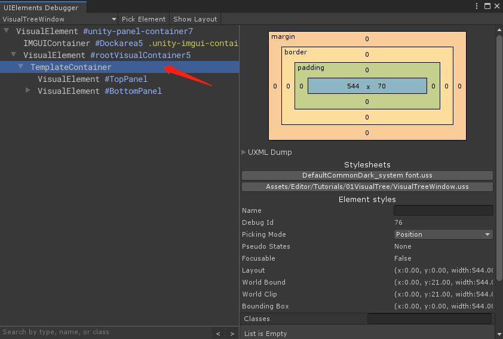
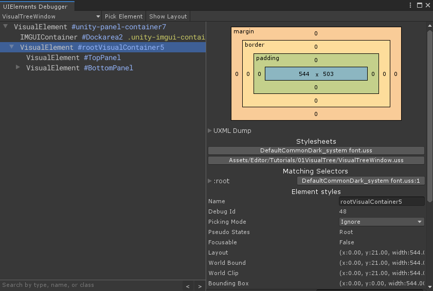

记录一下调研过程中遇到的坑和解决方案，顺便提一嘴可视化调试工具
在摸索UXML附加到C#根节点的时候，有这么一段代码：
1 | // Import UXML |
这样确实能成功将UXML定义的树结构添加到root下，但是当我使用flex-grow对子元素填充全屏时，发现无论如何都没有生效。 更离谱的是，打印root的layout信息，root的高度和宽度都是正常的。但是全屏元素打印layout，高宽永远都是0和0
最后利用可视化调试工具Window——Analysis——UIElements Debuger发现了端倪：

这里夹了一层TemplateContainer，这其实由于写法导致的，上面代码中我们得到的labelFromUXML对象会默认形成这一个节点，如果要正确地附加UXML的内容给root，需要这样写：
1 | // Import UXML |
这样TemplateContainer就消失了：
